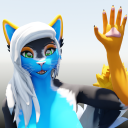

Floood | 20/06/2023
VRCHAT RETEXTURE/EDIT COMMISSIONS
Hi there, my name's Floood, and I have decided to start offering vrchat avatar retexture commissions. Below, I will show some of my previous work, rendered in blender under eevee, as well as some of the modifications I have made for some avatars. I am also able to do avatar optimizations, such as making a quest fallback avatar. As well, I am most experienced with these models;
- Ghostly's Female Felines
- Ghostly's Mamagen
- RezilloRyker's Rexouium
- Nardo's Nardoragon
- Kita's Kita'vali
- Dashi/Rai Kitamatsu's Da'vali
- FoxiPaws' Archer
- FoxiPaws' Kara
- Darbi's Female Kiggy
- Hobbert's Arflin
- Hobbert's Mewlin
- Hobbert's Hobkin
- Hobbert's Hobkin Redux
- Hobbert's Dranari